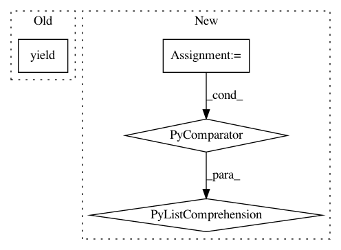

de00082780be884fc90e0113d323bfd63006ffba,app/datasets/wsj0.py,Wsj0Dataset,epoch,#Wsj0Dataset#,37
Before Change
examples=indices, batch_size=batch_size).get_request_iterator()
for req in req_itor:
data_pt = dataset.get_data(handle, req)
yield data_pt
dataset.close(handle)
After Change
for req in req_itor:
data_pt = dataset.get_data(handle, req)
max_len = max(map(len, data_pt[0]))
spectra_li = [np.pad(
x, [(0, max_len - len(x)), (0, 0)],
mode="constant") for x in data_pt[0]]
spectra = np.stack(spectra_li)
spectra = np.reshape(
spectra, [
hparams.BATCH_SIZE,
In pattern: SUPERPATTERN
Frequency: 4
Non-data size: 4
Instances
Project Name: khaotik/DaNet-Tensorflow
Commit Name: de00082780be884fc90e0113d323bfd63006ffba
Time: 2017-08-07
Author: junkkhaotik@gmail.com
File Name: app/datasets/wsj0.py
Class Name: Wsj0Dataset
Method Name: epoch
Project Name: foxbook/atap
Commit Name: fcbec86ccf658ad53011666497bb1c9bb943cf0d
Time: 2018-10-29
Author: benjamin@bengfort.com
File Name: snippets/ch03/preprocess.py
Class Name: Preprocessor
Method Name: transform
Project Name: janfreyberg/superintendent
Commit Name: b43b46e835c403a752286ca2c612891d345045db
Time: 2018-05-09
Author: jan.freyberg@gmail.com
File Name: superintendent/iterator_functions.py
Class Name:
Method Name: _default_data_iterator
Project Name: nilmtk/nilmtk
Commit Name: 59a4736028fea991396643e361d0488c7c96736d
Time: 2014-12-02
Author: jack-list@xlk.org.uk
File Name: nilmtk/elecmeter.py
Class Name: ElecMeter
Method Name: power_series